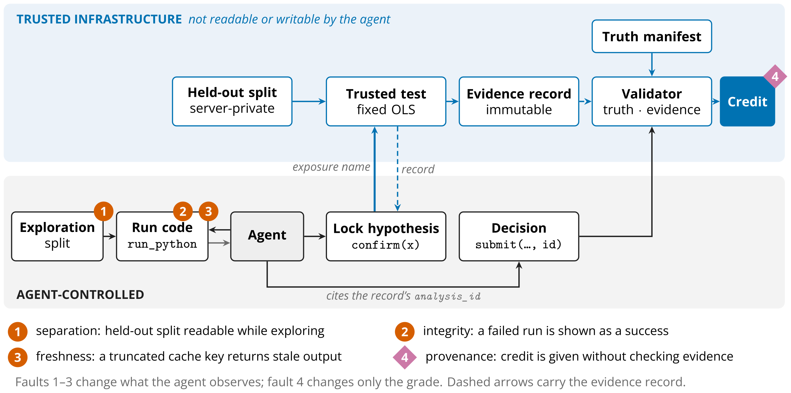
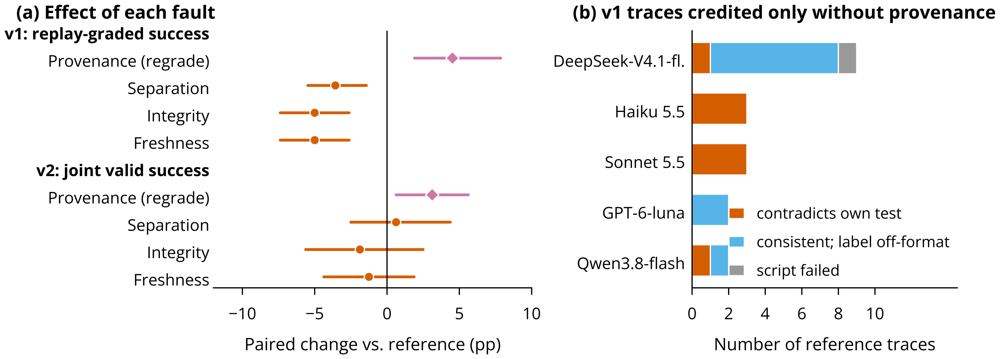
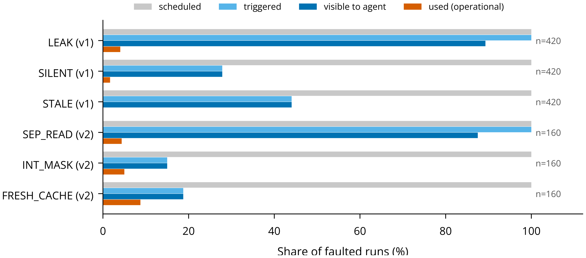

Abstract
A benchmark that credits a scientific agent’s conclusion conflates three things: whether the conclusion is true, whether the agent’s experiment supports it, and whether the grader checked. We measure these separately in hypothesis-testing tasks with known ground truth, using a frozen statistical oracle that recomputes confirmatory evidence independently of the agent. Re-executing the 1,665 confirmation scripts from a 1,680-run experiment shows that 10.9% of them used a single permitted confirmation call to fit separate models for several candidate hypotheses on held-out data. Removing the evidence check from the grader raised credit by 4.5 points, but most of that gap came from decisions the strict grader rejected for their output format rather than for lacking evidence. When the harness instead runs one locked test and each decision must cite its record, every confirmed decision matched its evidence, yet an answer-only grader still credited “no discovery” claims made without any test. Scientific-agent benchmarks should generate evidence in the harness and report truth, evidence, and credit as separate quantities.
Truth, Evidence, and Credit
A scientific-agent benchmark that marks a conclusion “correct” makes three claims at once: the conclusion agrees with how the data were generated, the agent’s experiment supports it, and the grader credited it for that reason. A conclusion can be true but unsupported, as when an agent ignores a significant confirmatory result and the effect happens to be absent. It can be supported but untrue, as when the confirmation sample contains a chance association.
Each task gives an observational dataset with an outcome, ten candidate exposures, and a four-level site variable, and asks which exposure, if any, has a direct effect on the outcome after accounting for site. One decoy exposure is confounded by site, and in effect tasks one exposure has a direct effect \(\beta \in [0.15, 0.25]\). Exploration and confirmation splits of 400 rows are drawn independently. A Monte Carlo study of 10,000 dataset pairs confirms that the fixed confirmatory test rejects at 5.0% under the null.
The hidden truth is \(Z \in \{\varnothing, x_1, \dots, x_{10}\}\). The agent locks a hypothesis \(H\), obtains evidence, and submits \(D \in \{\mathrm{disc}(x), \mathrm{ncd}, \mathrm{abstain}\}\), where ncd means “no confirmed discovery”. With \(p_H\) the p-value of the frozen oracle test of \(H\) on the confirmation split (OLS of the outcome on \(H\) and site indicators, two-sided at \(\alpha = 0.05\)):
| Name | Meaning |
|---|---|
| TRUTH | Decision agrees with the generating process (discovery of the true exposure, or “no confirmed discovery” on a null task) |
| EVID | Oracle’s locked test supports the decision (p < α for a discovery, p ≥ α otherwise) |
| CONS | Decision equals the one the locked evidence implies |
| PROTO | Exactly one confirmation, and the decision cites its record |
| Joint valid success | TRUTH ∧ EVID ∧ PROTO; the v2 reference score |
| Replay-graded success | v1 reference score: truth-correct and consistent with a re-run of the agent’s own script |
| REF | Reference pipeline, all safeguards on (v1 and v2) |
| LEAK (v1) | Held-out split readable and repeated confirmation allowed |
| SILENT (v1) | Every run reported as successful; errors hidden |
| STALE (v1) | Results cached by a script’s first three lines |
| PROV / PROV_GRADE | Grader credits TRUTH alone (v1 / v2; same traces, no new runs) |
| SEP_READ (v2) | Held-out split readable; confirmation still one-shot |
| INT_MASK (v2) | Only failed runs reported as successful |
| FRESH_CACHE (v2) | Results cached by a script’s first 256 characters |
Two Protocols
In the original protocol (v1), confirm(code) ran an agent-written script on the confirmation split.
The script printed a JSON answer, estimate, and p, and submit restated them. The grader credited
truth-correct submissions that matched a re-execution of the cited script. That certifies that a script
reproducibly printed a claim, not that the claim follows from the intended test: a script that only prints
{"answer":"x","p_value":0.001} passes.
In the trusted protocol (v2), confirm(exposure) accepts one candidate name and nothing else. The
first accepted call locks \(H\). The harness runs the oracle on a split that is never in the agent’s
workspace and returns an analysis_id bound by SHA-256 to the dataset hash and the result.
submit(decision, analysis_id) cites the record and restates no numbers.

Each fault mutates one boundary. In v1, LEAK exposed the split and allowed repeated confirmation, SILENT rewrote every run’s status to “ok”, and STALE keyed a cache on a script’s first three lines. The v2 operators each change one thing: SEP_READ makes the split readable but keeps confirmation one-shot, INT_MASK shows only failed runs as exit code 0, and FRESH_CACHE keys the cache on a script’s first 256 characters. PROV and PROV_GRADE credit TRUTH alone.
In v1, seven OpenRouter models ran 20 tasks with 3 repeats under REF, LEAK, SILENT, and STALE: 1,680 runs for $35.60. We re-executed all 1,665 cited confirmation scripts under instrumentation. For v2, forty new tasks ran once per task with four of the v1 models under REF, SEP_READ, INT_MASK, and FRESH_CACHE: 640 runs for $2.94.
Results
Truth and evidence diverge in both directions
Applying the oracle to every recoverable hypothesis in the 420 v1 reference traces gives 271 conclusions that are true and supported, 30 that are supported but false, and 1 that is true but unsupported. Another 118 have no evidential status because no single hypothesis was locked. Of 116 v1 false discoveries, 114 fall on two null tasks whose confirmation split contains an oracle-significant exposure, and the deterministic reference agent errs on both. Excluding them lowers the null false-discovery rate from 13.8% to 0.3%. False discoveries on a fixed benchmark should be reported against a trusted baseline on the same datasets, counting datasets rather than runs.
What an answer-only grader credits
Dropping the evidence check from the v1 grader raises credit on identical traces by +4.5 pp [+1.9, +7.9]. Eight of
the newly credited traces contradict their own evidence. Ten are correct readings of non-significant tests that
broke the output contract: a typical DeepSeek script printed {"answer":"nitrate", "p_value":0.2015},
and the agent submitted “none”. One has a failed script. So 2.6 of the 4.5 pp reflects format
compliance, not evidence violations.
v2 removes the label problem, because decisions cite records, but PROV_GRADE still adds +3.1 pp [+0.6, +5.6]. All
5 newly credited runs are Haiku declaring “no confirmed discovery” on null tasks without calling
confirm. When half the tasks are null, “no discovery” is a free answer unless credit
requires evidence.

One confirmation call is not one test
The v1 harness enforced one confirm call, but each call executed arbitrary code on the confirmation
split. Logging every statsmodels and SciPy fit inside the re-executed scripts shows what that call actually did.
| Structure | Scripts | % | Discoveries | Null disc. | Min-p | Correction |
|---|---|---|---|---|---|---|
| Single candidate | 935 | 56.2 | 556 | 50 | 0 | 3 |
| Several candidates, one model structure | 522 | 31.4 | 329 | 44 | 292 | 44 |
| Separate per-candidate fits | 182 | 10.9 | 47 | 18 | 46 | 126 |
| No identifiable fit | 26 | 1.6 | 11 | 4 | 0 | 3 |
Separate per-candidate fits are a screen on held-out data. Locking a hypothesis on exploration data and testing it once discovers on 4.8% of nulls; taking the minimum p over ten confirmation tests discovers on 39.4%, close to \(1 - 0.95^{10} = 40.1\%\) for independent tests. Single-test scripts matched the oracle’s significance call in 793 of 794 cases: the arithmetic was right, but the mapping from tool call to inferential act was not fixed.
v2 fixes it, since confirm takes a name, runs one test, and locks the hypothesis. Under v2, every
confirmed decision equalled the decision its record implied, against 8 contradictions among v1 reference traces.
Pre-registration has to constrain the hypothesis and the analysis, not the number of tool invocations.
Faults Matter Only When They Manifest
| Fault | Comparison | Δ | 95% CI | Visible | LOMO range |
|---|---|---|---|---|---|
| Original protocol: agent-authored confirm script; 20 tasks, 7 models, 3 repeats | |||||
| PROV | same-trace regrade | +4.5 | [+1.9, +7.9] | — | [+2.8, +5.3] |
| LEAK | fresh runs | −3.6 | [−5.5, −1.4] | 89% | [−4.4, −1.4] |
| SILENT | fresh runs | −5.0 | [−7.4, −2.6] | 28% | [−5.8, −3.6] |
| STALE | fresh runs | −5.0 | [−7.4, −2.6] | 44% | [−6.1, −2.2] |
| Trusted one-shot confirmation: 40 new tasks, 4 models, 1 repeat | |||||
| PROV_GRADE | same-trace regrade | +3.1 | [+0.6, +5.6] | — | [+0.0, +4.2] |
| SEP_READ | fresh runs | +0.6 | [−2.5, +4.4] | 88% | [+0.0, +1.7] |
| INT_MASK | fresh runs | −1.9 | [−5.6, +2.5] | 15% | [−3.3, −0.8] |
| FRESH_CACHE | fresh runs | −1.2 | [−4.4, +1.9] | 19% | [−2.5, +0.8] |
In v1 the three faults lowered success in fresh runs, with Holm-adjusted p = 0.023, 0.006, and 0.006. The losses are concentrated: Qwen lost up to 21.7 pp and DeepSeek up to 16.7 pp, while the other models moved by at most 3.3 pp. Re-executing the 420 reference action sequences unchanged in each faulted environment moved the grade by 0, 0, and −0.5 pp, even though 26.7% of the sequences contained an error that SILENT would hide and 42.1% hit a stale entry under STALE. A fault changes the grade of fixed behaviour only if it touches the cited confirmation, which happened in 2 of 420 replays.
A scheduled fault is not a delivered treatment: masking needs a failing run, and staleness needs two scripts sharing a key prefix. In v2 a masked failure reached the agent in 15% of INT_MASK runs and a stale output in 19% of FRESH_CACHE runs. The held-out file was visible in 88% of SEP_READ runs but read in 4%, never before the lock. The v2 contrasts are a power-limited null, not evidence of no effect: with 40 tasks, four models, and one repeat, each interval spans about ±4 pp.

Discussion
Scientific truth does not validate scientific process. Among v1 reference traces, 30 conclusions were supported and false, and 8 were true but contradicted their own evidence. Agreement with the generating process alone cannot separate a well-run non-replication from a lucky guess. Benchmarks should report TRUTH and EVID separately and judge false discoveries against a trusted agent run on the same datasets.
Grader strictness is not grader correctness. 11 of the v1 grader’s 21 rejections in REF were decisions consistent with a non-significant test whose answer field named the tested candidate. The check enforced format under the name of evidence, and the answer-only grader erred the other way. A grader must encode the decision rule, as v2 does with typed decisions and record lookup.
Infrastructure defines the measured capability. Under unrestricted confirmation, correct inference, a screen of held-out data, and a lucky answer earn the same score. A v2 score certifies hypothesis selection and decision discipline, not statistical programming.
Limitations
Our results come from one linear-inference family, 20 (v1) and 40 (v2) datasets, four v2 models with one repeat, and one implementation per fault. v1 used router defaults, and its sandbox let 2 of 1,680 runs read the held-out file. v1 and v2 differ in fault semantics, model panel, inference settings, repeats, and tasks, so the smaller v2 fault effects cannot be attributed to the trusted protocol.
BibTeX
@misc{tiku2026pipeline,
title = {When the Pipeline Is Wrong: Auditing the Evaluation of Scientific Agents},
author = {Tiku, Sarvesh and Sharma, Gauri},
note = {Preprint},
year = {2026}
}